Will Styler - LIGN 113
They are the final transducer between mechanical movement and nerve impulses
They are really cool
Our question today is very simple: How do you turn mechanical movements into nerve firings?
What parts of the IHCs are sensitive to movement?
How does that motion trigger a nerve firing?
How do those nerve firings represent frequency?
How do those nerve firings represent amplitude?
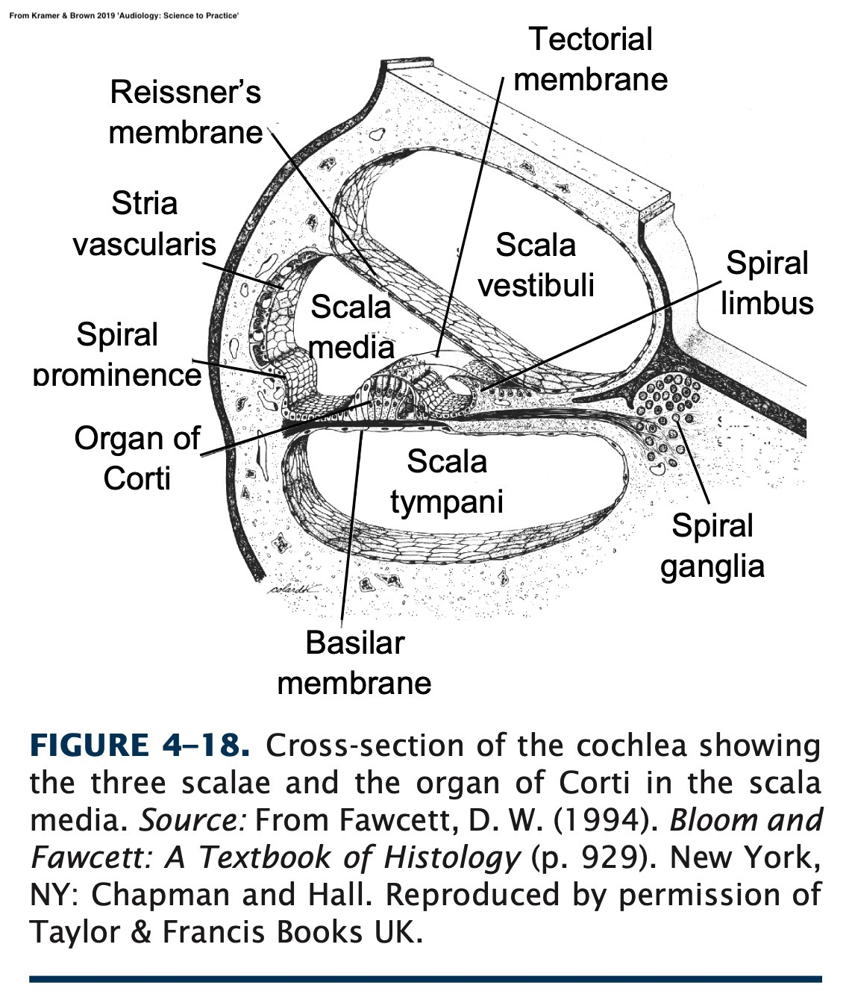
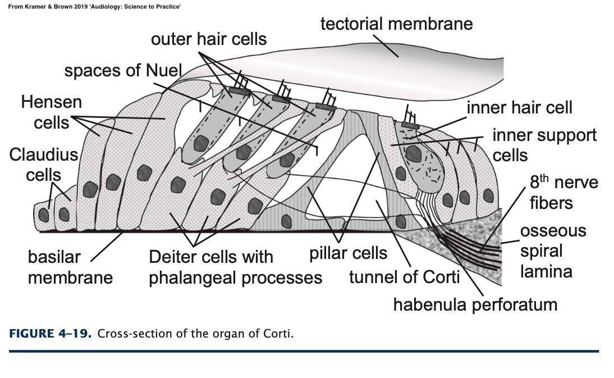
The whole organ of corti moves
The tectorial membrane moves indepedently
The OHCs do their amplification and tuning thing
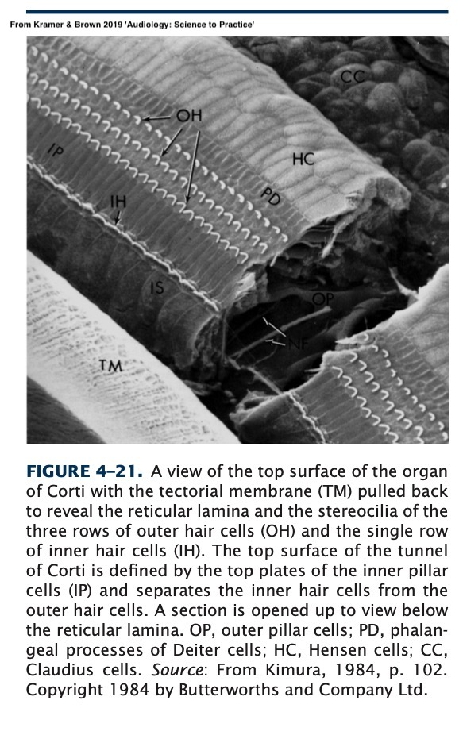
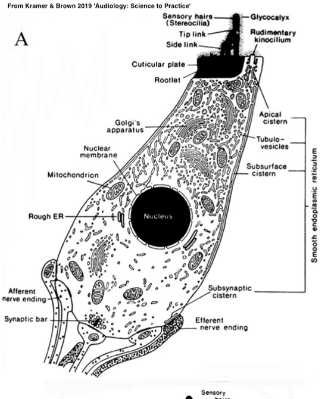
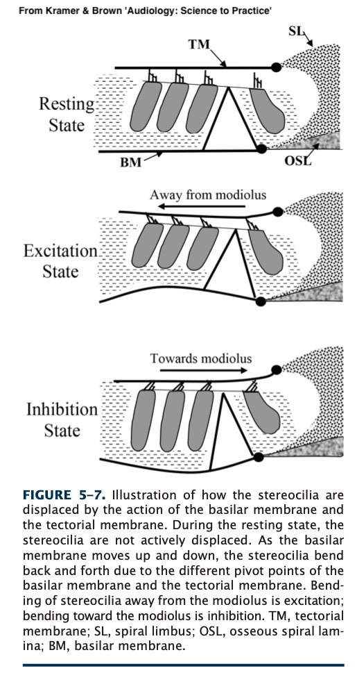
Either fluid movement or the tectorial membrane can bend the stereocilia
Maybe both at once!
Endolymph in the Scala Media has a positive potential (+80mV of K+)
Perilymph in the other two scalae has a neutral potential
This sets up the endocochlear potential
This potential is maintained by the stria vascularis
The tips and stereocilia are in +80mV of K+ Ions
The base of the cell is in ~0mV of K+ Ions
Ion pump structures in the cell wall remove K+ ions
This results in a negative intracellular potential
This is also known as polarization
… and the stereocilia are swimming in positive ions!
This is a potential solution to our problem!!
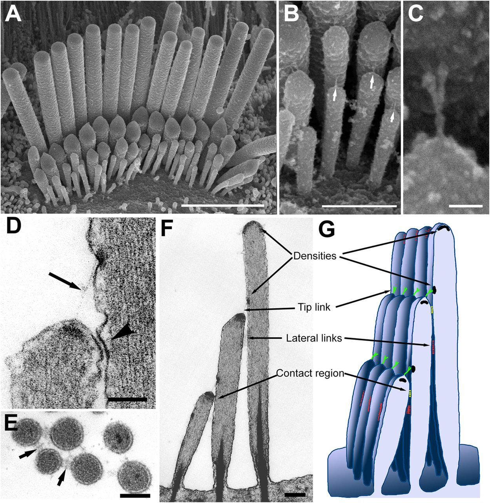
Sourced from https://jcs.biologists.org/content/126/8/1721
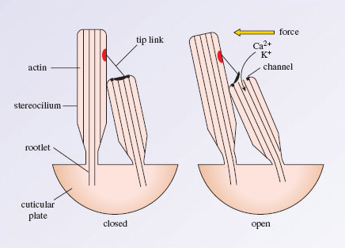
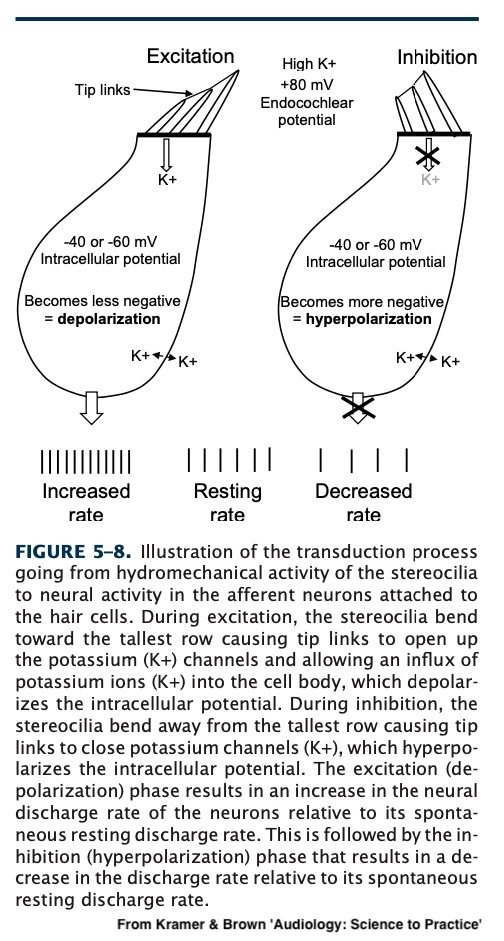
The tip links again block the ion channels
The cell repolarizes
The nerves fire at a much decreased rate
The endocochlear potential is built up and constant
The Inner Hair Cells have a negative charge
The Endolymph has a positive charge
When the stereocilia are deflected by sound, they let in positive ions and depolarize the cell
The Depolarization triggers increased nerve firings
This stops when the stereocilia return to rest
This is the same method by which OHCs do their thing!
… and what triggers nerves to fire
Amplitude?
Period?
Frequency?
Wavelength?
Phase?
“Frequency is coded by how often the neurons fire”
“Amplitude is coded by how strongly the neurons fire”
This is super wrong
These nerve impulses are limited to firing at ~1000 Hz on the high end
Neurons have a binary firing pattern
Place theory
Frequency theory
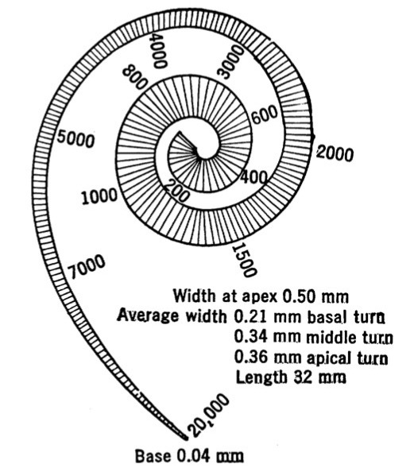
We know where on the BM is sensitive to what frequencies
We also know where on the BM each signal is coming from
So, boom, frequency!
Psychoacoustic Evidence!
Evidence from Disordered Hearing
Evidence from “Missing Fundamental”
Place theory is mostly problematic in low frequencies!
“We use neural firing patterns to code frequency directly, at every place along the BM”
“The firing patterns themselves code frequency”
Also called the ‘Frequency theory’
Recall the maximum firing rate is ~1,000 Hz
We need another method!
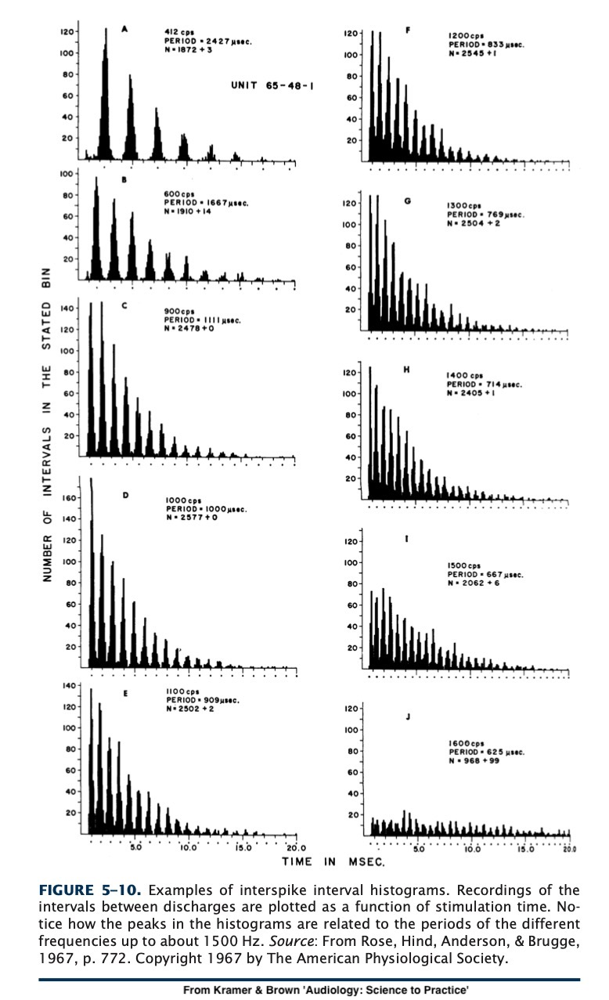
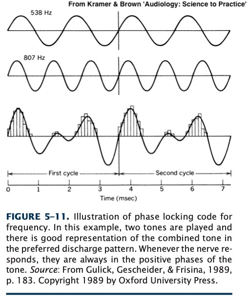
~1000Hz theoretical firing rate limit
Phase locking stops around 5kHz
High frequencies are tough for frequency theory!
Place theory works well in mid-to-high frequencies
Temporal theory works well in low frequencies!
It seems likely that we’re using both methods to some extent!
By noting where on the BM this sound is triggering responses
By looking at the pattern of firings to detect periodicity!
“Well, the neuron fires more often when it’s being stimulated more”
But this has major problems!
Nasty interaction with frequency-of-firing-based frequency perception!
Nerve firing rates plateau quickly!
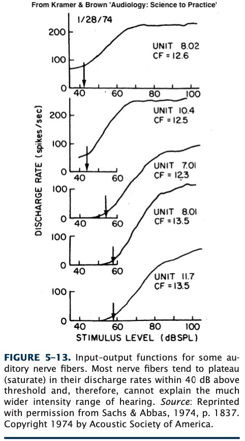
Recruitment
Differential Sensitivity
As the signal gets stronger, more of the BM moves
This recruits more neurons to fire
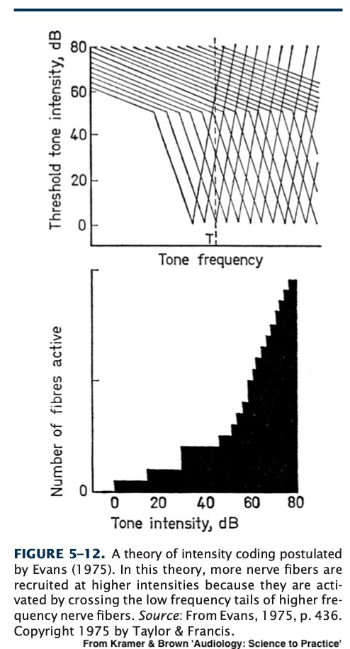
The last theory assumes that all neurons respond alike
That doesn’t have to be true!
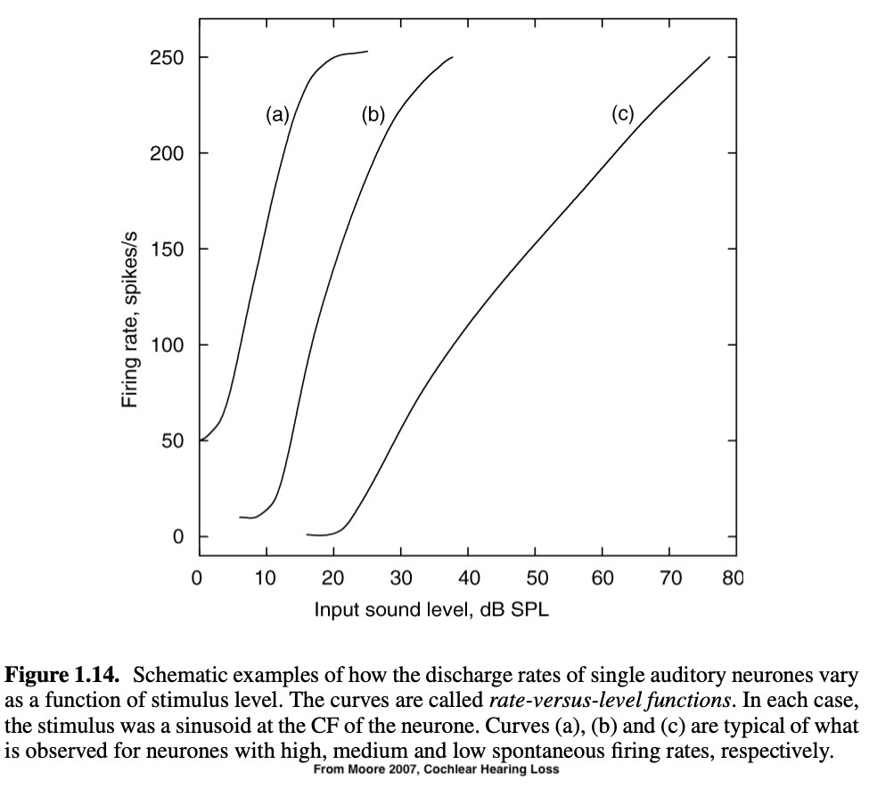
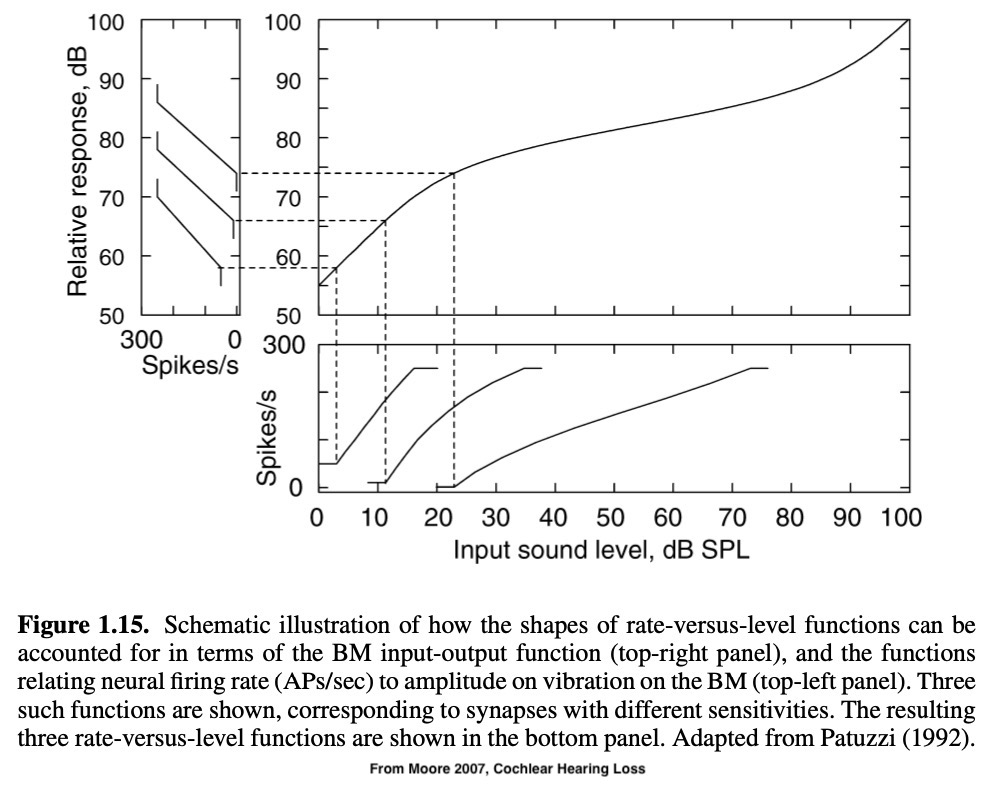
Both because more of the BM is moving
… and because some neurons are tuned for different amplitudes
Nerve response within the temporal bone
We’re nowhere near sure about these mechanisms
The BM moves due to the hydromechanical movements associated with sound entering the cochlea
The IHCs depolarize when the stereocilia are disturbed
This causes the neurons to start firing
We fire in specific patterns to signal differences in frequency
… and more neurons fire when there’s greater power